DiET-GS and DiET-GS++
Overall Framework
Overall framework of DiET-GS. Stage 1 (DiET-GS) optimizes the deblurring 3DGS with leveraging the event streams and diffusion prior. To preserve accurate color and clean details, we exploit EDI prior in multiple ways, including color supervision $C$, guidance for fine-grained details $I$ and additional regularization $\tilde{I}$ via EDI simulation. Stage 2 (DiET-GS++) is then employed to maximize the effect of diffusion prior with introducing extra learnable parameters $\mathbf{f}_{\mathbf{g}}$. DiEt-GS++ further refines the rendered images from DiET-GS, effectively enhancing rich edge features. More details are explained in Sec. 4.1 and Sec. 4.2. of the main paper.
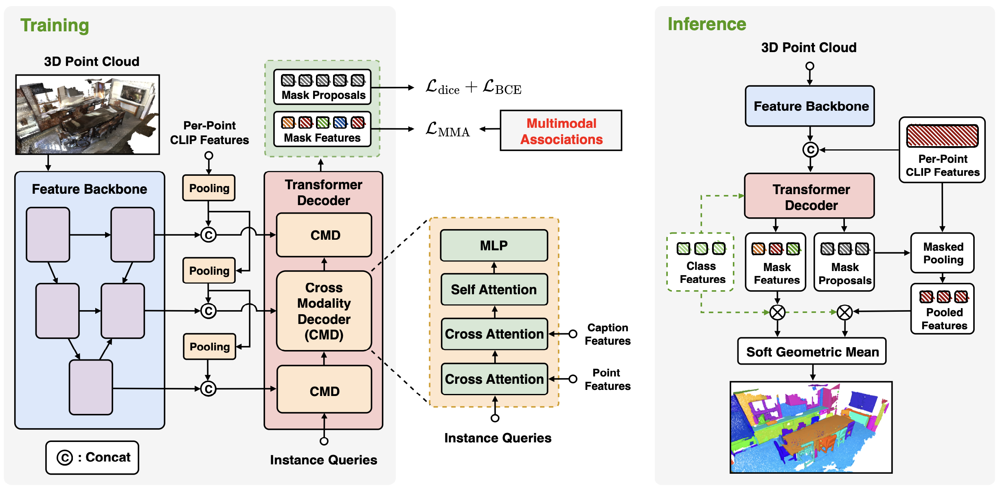
Quantitative Results
Quantitative comparisons on novel-view synthetis with both synthetic and real-world dataset. The results are the average of every scenes within the dataset. The best results are in bold while the second best results are underscored. Our DiET-GS significantly outperforms existing baselines in PSNR, SSIM and LPIPS while our DiET-GS++ achieves the best scores in NR-IQA metrics such as MUSIQ and CLIP-IQA.
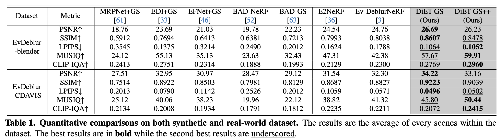
Quantitative comparisons on single image deblurring with real-world datasets. Our DiET-GS++ consistently outperforms all baselines in every 5 real-world scenes.
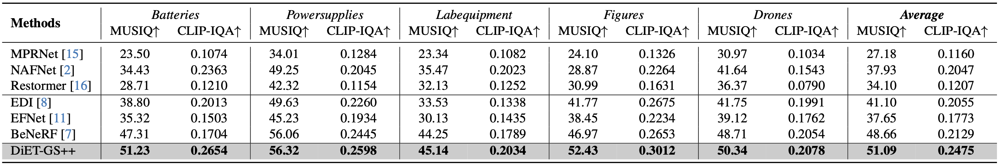
Qualitative results
DiET-GS shows cleaner texture with more accurate details compared to the event-based baselines while DiET-GS++ further enhances these features with sharper definition, achieving the best visual quality.
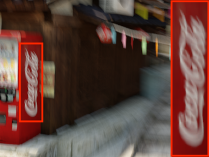
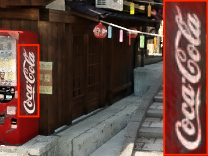

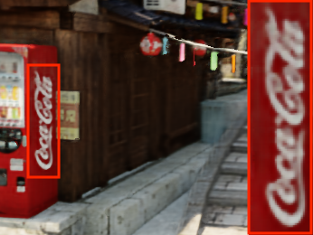
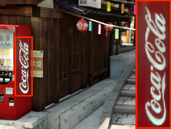
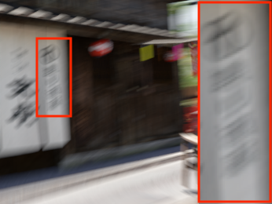
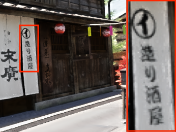
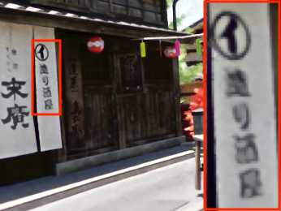

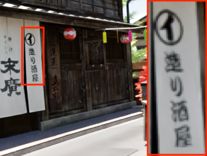
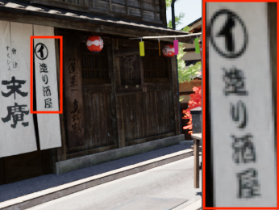
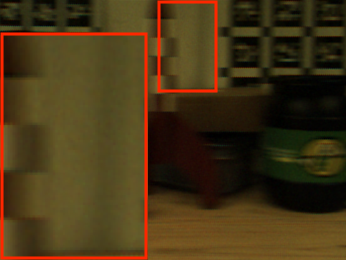
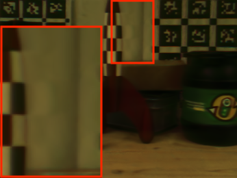
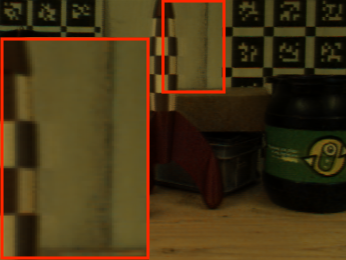

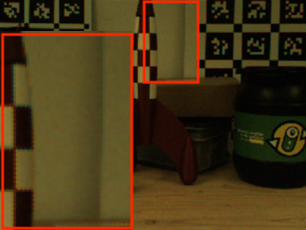
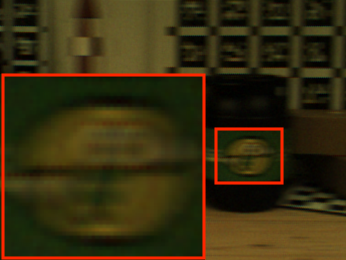
Blurry Image
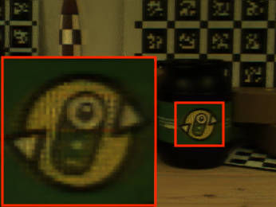
EDI+GS
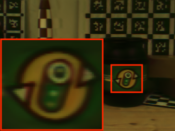
E2NeRF
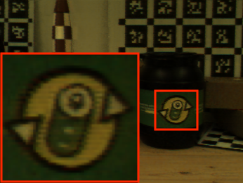
Ev-DeblurNeRF
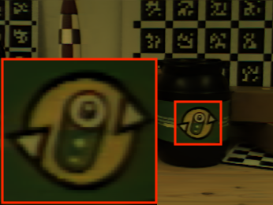
DiET-GS (Ours)
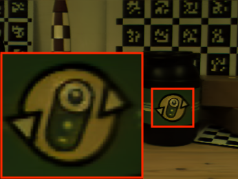
DiET-GS++ (Ours)
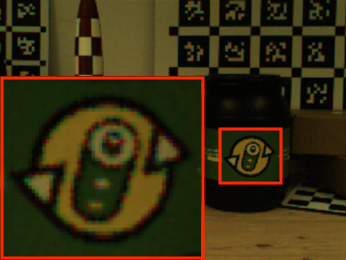
GT
BibTeX
@article{park2021nerfies,
author = {Park, Keunhong and Sinha, Utkarsh and Barron, Jonathan T. and Bouaziz, Sofien and Goldman, Dan B and Seitz, Steven M. and Martin-Brualla, Ricardo},
title = {Nerfies: Deformable Neural Radiance Fields},
journal = {ICCV},
year = {2021},
}